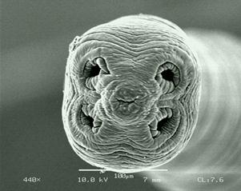

AMBE 101 :: Lecture 15 :: SOIL MICROBIOLOGY: MICROBIAL GROUPS IN SOIL

The field of soil microbiology was explored during the very last part of 19th century. The establishment of the principal roles that microorganisms play in the biologically important cycles of matter on earth: the cycles of nitrogen, sulphur and carbon was largely the work of two men, S. Winogradsky (1856-1953) and M.W. Beijerinck (1851–1931). S. Winogradsky, Russian and regarded by many as the founder of soil microbiology, discovered nitryfiying bacteria (1890-91); described the microbial oxidation of H2S and sulphur (1887); developed the contributed to the studies of reduction of nitrate and symbiotic nitrogen fixation; and, originated the nutritional classification of soil microorganisms into autochtonous (humus utilizers) and zymogenous (opportunistic) groups.
Almost equally important was the work of M.W. Beijerinck, a Hollander, who isolated the agents of symbiotic (1888) and non-symbiotic aerobic (1901) nitrogen fixation. However, the greatest contribution of Beijerinck was a new and profoundly important technique: enrichment culture technique: to isolate and study various physiological types of various microorganisms from natural samples through the use of specific culture media and incubation conditions.
Bacteria- more dominant group of microorganisms in the soil and equal to one half of the microbial biomass in soil. Majority are Heterotrophs. (Common soil bacteria - Arthrobacter, Bacillus, Clostridium, Micrococcus).
ROD SHAPED BACTERIA
SPHERICAL BACTERIA
Actinomycetes - intermediate group between bacteria and fungi. Numerous and widely distributed in soil. Abundance is next to bacteria. 104 - 108/g soil. 70% of soil actinomycetes are Streptomyces. Many of them are known to produce antibiotics. Population increases with depth of soil.
Actinomycetes - intermediate group between bacteria and fungi. Numerous and widely distributed in soil. Abundance is next to bacteria. 104 - 108/g soil. 70% of soil actinomycetes are Streptomyces. Many of them are known to produce antibiotics. Population increases with depth of soil.
Fungi: More numerous in surface layers of well-aerated and cultivated soils-dominant in acid soils. Common genera in soil are Aspergillus, Mucor, Penicillium Trichoderma, Alternaria, Rhizopus.

Algae – found in most of the soils in number ranges from 100 to 10,000 per g.
Protozoa: Unicellular – population ranges from 10,000 to 100,000 per g of soil. Most of the soil forms are flagellates, amoebae or ciliates. Derive their nutrition by devouring soil bacteria. Abundant in upper larger of the soil. They are regulating the biological equilibrium in soil.
Importance
- Involved in nutrient transformation process
- Decomposition of resistant components of plant and animal tissue
- Role in microbial antagonism
- Participate in humus formation
- Predator of nematodes
- Surface blooming reduces erosion losses
- Improve soil structure
- Involved soil structure
- Maintenance of biological equilibrium
actors influencing activities of soil microorganisms: Soil microorganisms are influenced by various factors. Chief factors are,fertility levelSoil moistureSoil airsoil temperatureOrganic matterH ion concentrationCultural factors.
| Download this lecture as PDF here |